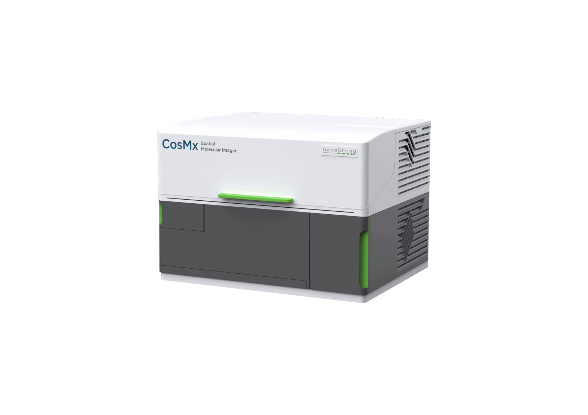
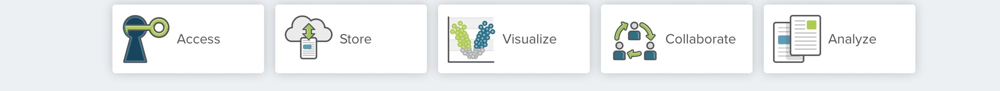

The product
The imager is the camera. AtoMx is the shared photo library.
NanoString's CosMx Spatial Molecular Imager captures cell level images of tissue samples. AtoMx Spatial Informatics Platform (SIP) is where that output goes. NanoString describes it as the only cloud-based, fully integrated informatics platform for spatial biology.
The brief asked for a place where researchers with computational experience could build and run their own analysis modules and pipelines on cloud compute, share data with teams around the world, and work through large spatial multiomics datasets from anywhere.
Three kinds of people use it: platform admins, general users and free users, each with a different level of access.

The platform is built around five jobs: access, store, visualise, collaborate and analyse. The screens in this case study follow the first four, in the order a researcher meets them.

What made this hard
Images bigger than any screen
A single tissue scan is far larger than a monitor, so people can easily lose their place when zoomed in.
Many kinds of content
Collections, studies, flowcells and scans all live side by side and look alike at a glance.
Users who know more than me
Researchers understand the biology deeply. My job was to stay out of their way, not to explain their data to them.
1Access
One clear door in
The sign in screen splits the page in two. The AtoMx brand sits on one side, and on the other there is one action for returning users and one for new ones.
Why
Wayfinding first: the brand panel confirms where users are before asking anything of them. A single primary action per path, sign in or register, keeps cognitive load low and avoids a form heavy first impression.
2Store
Finding the right run in a growing library
Home puts the three kinds of content in rows, each with its own View all. The side menu scopes everything to My content, Team content or Shared content.
Why
The information architecture follows the researcher's mental model of runs and studies, not files. Grouping all three content types on one screen gives a scannable overview, and View all applies progressive disclosure so home never turns into an endless list.
Fig 04
Browsing by type
Collections, studies, and flowcells and scans each get a tab with a card grid, pagination and a grid or list toggle. A colored left edge on study cards marks their state, so they read apart before you read a word.
Why
A consistent card component keeps the grid predictable and easy to scan. Color is a pre-attentive cue, so a thin colored edge lets users tell types and states apart before they read, while the text labels stay as the primary signal.
Fig 05
Filters you can see
A side panel groups filters such as created date, owner, name, study ID, morphology kit and status. Applied filters stay visible as chips above the results.
Why
Recognition over recall: with this many filter fields, users lose track of what is applied and misread the results. Chips give visibility of system status and a one click undo, so users stay in control of the result set.
Fig 06
Small moments: creating a collection
A short modal asks for one thing, the name. A tooltip explains when a collection can be created, and a toast confirms when it has been.
Why
With a single input, a modal avoids a context switch to a new page. The tooltip is error prevention, explaining the rule before the user hits it, and the toast is non blocking feedback that confirms success without interrupting the flow.
3Visualise
Keeping your place in a huge tissue image
The viewer shows a scan as a grid of numbered fields of view on a dark canvas. A minimap and zoom controls sit in the corner, so researchers always know which part of the tissue they are looking at.
Why
Focus plus context: zooming into one cell normally means losing the whole sample. The minimap keeps orientation on screen, and numbered fields of view create a shared reference system so the team can point at the same region.
Fig 07 Image viewer with field of view grid, minimap and zoom
4Collaborate
Bringing the team to the same image
Collaboration happens in two places: where the work is, and where you hear about it.
Fig 08
Comments on the scan
A comments panel opens beside the image. Mentions send a question about one region of tissue to the right person, without anyone leaving the scan.
Why
Contextual collaboration: a comment only makes sense next to the region it refers to. Keeping the image and the thread side by side removes context switching and the extra effort of describing where to look.
Fig 09
Notifications
A drawer collects collaboration invites, storage upgrades, items ready for annotation and subscription changes, with mark all as read and a link to the full activity list.
Why
Many updates come from long running background processes, like storage changes or data becoming ready for annotation. A non modal drawer keeps that background activity within reach without pulling users out of their current task.
Underneath
The design system I took on
When I joined, the core screens were already taking shape. I took on the design system from there, so the remaining screens and every new state drew from the same shared parts.
Why
Consistency and standards: joining a live project meant picking up patterns that already existed and extending them, while two designers worked on many similar screens in parallel. A shared component library kept patterns consistent between us and gave developers a single source of truth. The primary teal and secondary green come from the AtoMx brand, so the software and the instrument read as one product family.
Handoff
What went to the developers
01
The design system
Buttons, color, tables, icons, menus and the layout grid, in one shared file.
02
Every state
Empty and filled modals, tooltips, toasts, selected rows and applied filters.
03
Final screens
Sign in, home, browsing, filters, notifications and the image viewer.
Looking back
Joining AtoMx halfway taught me to pick up someone else's decisions quickly and build on them, for people who know their data far better than I do. Taking on its design system shaped how I build component libraries for enterprise products today.
Thanks for reading.